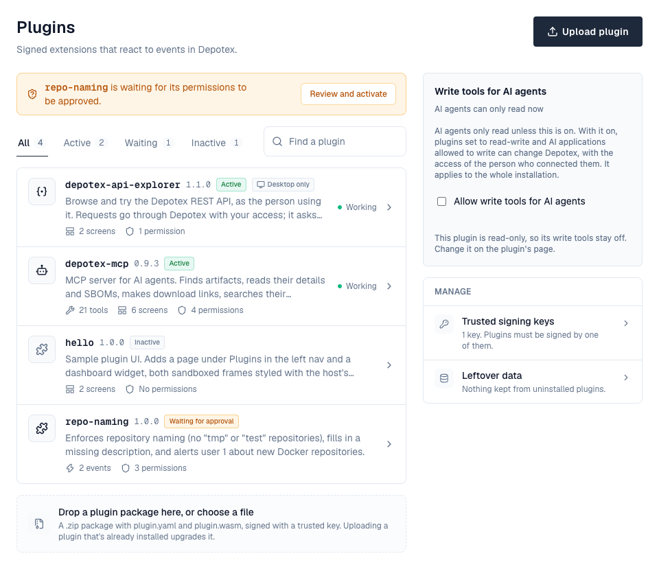
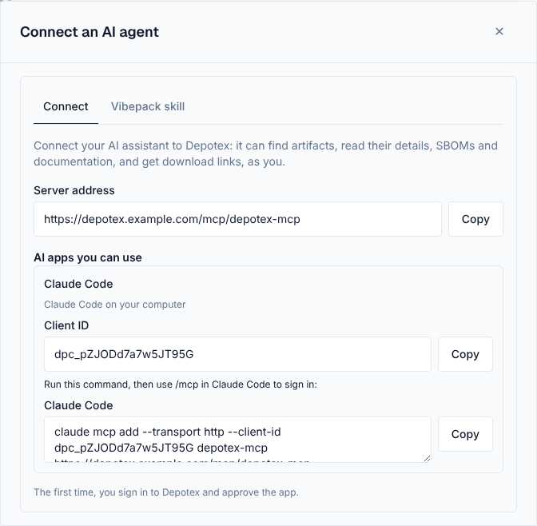

Plugins extend Depotex with your own logic. A plugin is a signed package that runs in a sandbox and receives events: it can check an action before it happens (and block it or adjust allowed values), or react after it happened (for example send an alert). A plugin can keep its own data, call web services you allow and take settings. A plugin can also be an MCP server: it gives AI applications such as Claude or Cursor tools to use, for the person who signed them in (see below).
License: Pro or higher. Permissions: plugins:read to see installed plugins; plugins:admin to install, approve, activate and remove them, change their settings and manage signing keys (super admins).
1. Installing a plugin
Settings → Plugins lists the installed plugins: each with its version, status (active, waiting for approval, inactive), what it brings (AI tools, screens, events, permissions, secrets) and, for active plugins, whether its calls are working on this server. Plugins waiting for approval, and plugins that are failing or paused, are listed first with what to do: Review and activate, or Restart. Filter by status or search by name or description. The side column holds what plugins add to this page (such as the switch for AI agents' write tools) and links to Trusted signing keys and Leftover data.

- If the plugin is signed by a key your server doesn't trust yet, go to Settings → Plugins → Trusted signing keys and add its public key (you get it from the plugin's author).
- Go to Settings → Plugins, choose Upload plugin and pick the .zip package, or drop the package on the upload area under the list.
- The plugin's page opens with Set up: a summary of what the plugin needs, then only what's missing (see Finishing setup). Review the events it receives, the permissions it asks for and, for data and network permissions, its limits and the web addresses it may call. Tick I approve these permissions and choose Activate.
Uploading a plugin that's already installed upgrades it. If the new version asks for permissions that weren't approved before, it waits for approval again; otherwise it stays active. Its data and settings are kept.
Deactivate stops a plugin but keeps it installed, with its data; Uninstall removes it and its package (see Data, network and secrets for what happens to its data). For a plugin with AI tools, the uninstall dialog also lists the AI apps that use it and asks, for each, whether to keep it, delete it (an app used only by this plugin) or remove the plugin from it (an app shared with other plugins). Nothing is chosen for you, and it needs permission to manage applications; apps allowed every plugin keep working with the others.
2. Finishing setup
After you upload a plugin that isn't running yet, its page opens a setup guide. It starts with a summary of everything the plugin needs, each marked done, needed, optional or blocked, and a link to the plugin's documentation when it has one. Then it asks only for what's missing:
- Secrets and required settings. A plugin can mark secrets and settings as required, and say where to get a value. It can't be activated until they are set: activating it is refused, and the guide opens at the missing fields. While it's active, a required secret can be replaced but not removed, and a required setting changed but not cleared.
- Approval. The permissions it asks for, approved all at once, then Activate.
- An AI app, for plugins with AI tools (see below).
- Things only your operator can fix are shown as blocked or as notes: Depotex's database role can't create plugin databases, or plugin web requests are turned off on this server (PLUGIN_EGRESS=false).
Finish setup on the plugin's page (with a Setup incomplete mark while something required is missing) opens the guide again. An upgrade that adds a required secret or setting stops the plugin, keeping its approval, until the value is set and it is activated again. Plugins without required fields work as before.
Every step saves the same way as the plugin's page or Applications would, so policies, events and the audit log apply. The guide never changes an AI app that's already registered unless you choose to add the plugin to it.
3. Permissions
| Permission | What it allows |
|---|---|
| events:intercept | Check actions before they happen, block them, or change the values the event allows (for example a repository's description) |
| events:subscribe | Receive events after they happen |
| alerts:create | Send alerts to users |
| db:own | Its own database schema, which only it can reach |
| kv:own | Its own key-value store (counters, short-lived values) |
| net:outbound | Call the web addresses listed in its package, and only those |
| mcp:serve | Offer tools to AI applications at its own MCP address |
| artifacts:read | From its AI tools: search artifacts, read a version's details and SBOMs, and hand out short-lived download links, as the person using the tool (needs mcp:serve) |
| docs:search | From its AI tools: search and read the documentation inside artifacts, as the person using the tool (needs mcp:serve) |
| artifacts:write | From its AI write tools: quarantine and release versions, as the person using the tool (needs mcp:serve; see Write tools) |
| api:explore | From its screens: call the REST API as the person using them, through Depotex, with that person's access. Depotex sends each request itself, never sends routes that answer with a secret (such as creating a token) or sign-in routes, asks the person before every change, and records the plugin in the audit log (via: plugin:<name>) |
| services:provide | Answer requests a Depotex feature sends it, for the services listed under provides (such as sbom.scan: vulnerability scans). The plugin page says, for each service, what the requests carry |
A plugin can't be activated with only some of the permissions it asks for. Without these permissions a plugin has no database, network or file access; with them it reaches only its own data and the addresses it lists.
4. Signing and trust
Every package is signed. Depotex checks the signature when you upload a plugin and every time a server loads it; removing a key under Trusted signing keys stops the plugins it signed on all servers.
With PLUGIN_SIGNING_REQUIRED=false, unsigned or untrusted packages can still be installed. They are marked Untrusted everywhere they appear. Only turn this off for development.
A plugin that keeps data has a permanent id (for example com.example.scanner). The first install ties the id to the key that signed it, so a package signed by someone else can never take over that plugin's data.
5. What people see
When a plugin blocks an action, the person sees the plugin's name and its message. If a plugin fails or takes too long while checking an action, the action goes ahead, except for security-sensitive actions (such as signing in), which are refused.
6. Plugin screens
A plugin can bring its own screens. They are declared in its package and appear only while the plugin is active; deactivating or uninstalling it removes them everywhere at once. Each screen runs in a sandboxed frame styled like Depotex, sees nothing but what the host hands it, and may show only to people with the permission the plugin names for it.
| Where | What a plugin can add |
|---|---|
| Left nav → Plugins | A full page of its own, listed as a sub-item (/plugins/<plugin>); the plugin draws everything but the left and top nav |
| Dashboard | A widget |
| Profile menu, Profile → settings | A menu entry that opens a dialog; a section in the Access group of your profile settings, after API tokens and Connected apps |
| Settings → Plugins, Settings → Applications, a settings page of its own | A section on those pages, or a page under Settings |
| The plugin's own page | A panel with its feature's controls |
| The setup guide | A step of its own after activation |
Depotex itself never draws a screen for one particular plugin: everything a plugin's feature needs, such as its keys, its connected apps or its switches, is a screen of that plugin. Secrets the host makes for a plugin screen (a key, for example) are shown by Depotex in its own dialog and never handed to the frame, and risky changes are confirmed by Depotex before they happen.
7. Data, network and secrets
The plugin's page has a tab for each screen the plugin adds there, then Settings (its secrets, settings and call limits) and Details (who made and signed it, the permissions it was approved for, the screens it adds and where people find them, the events it receives, its id, the limits it runs with, how much storage it uses and the web addresses it called on this server). A deactivated plugin can be activated again from the top of its page; it keeps the permissions it was approved for.
- Database (db:own): each plugin gets its own Postgres schema and login, set up when it is activated. Its tables are created by the migrations in its package, also on upgrades; a migration that fails refuses the upgrade and the old version keeps running. It can't see Depotex's tables or another plugin's. When it goes over its storage quota, super admins get an alert and the plugin can only read and delete until it's back under.
- Key-value store (kv:own): keys with an expiry, limited in number and size. With Redis they are shared by every server; on a single server without Redis they are kept in memory and lost on restart.
- Outbound calls (net:outbound): only to the https addresses in its package (*. matches subdomains), checked again on every redirect. Private and internal network addresses are refused. PLUGIN_EGRESS=false blocks every plugin request; with PLUGIN_EGRESS_PROXY requests go through your proxy, which then decides what is reachable.
- Secrets: a plugin can declare secrets (for example an access token for a web service). Administrators set them on the plugin's page. Depotex adds them as a header to requests to the hosts the secret names; the plugin never sees the value, and it is never shown again.
- Limits: a plugin can ask for less memory, a shorter time limit, fewer calls at once and fewer calls per second (across the cluster with Redis) than the installation allows; asking for more gives it the installation's limit. The page shows what it runs with.
- Call limits: the Call limits card on the plugin's Settings tab sets its calls per second, the share of them one AI app connection or MCP key may use (50% by default), and calls per second for particular AI apps. Blank fields keep the defaults. See Rate limits.
Data survives restarts, deactivating and upgrades. It is deleted only when an administrator chooses it and types the plugin's name:
- Restart offers Also delete its data: the database and keys are emptied and set up again (secrets are kept).
- Uninstall asks whether to keep or delete the data. Kept data appears under Settings → Plugins → Leftover data, where you can delete it later; installing the same plugin again picks it up.
Before using db:own: Depotex's database role (or the one in PLUGIN_DATABASE_URL) needs CREATEROLE and CREATE on the database, and pg_hba.conf must allow password (SCRAM) logins for the plugin roles, which are named plg_*. Activation is refused with a clear message when it doesn't.
8. Plugin settings
A plugin can declare settings: on/off switches, text, numbers with a range, or a choice from a list, each with a default. Administrators change them on the plugin's Settings tab; every call the plugin handles gets the current values. An upgrade keeps them, uninstalling removes them. Settings aren't for passwords or tokens: use secrets for those.
9. MCP servers for AI applications
A plugin with mcp:serve serves its tools at https://<your Depotex address>/mcp/<plugin name>, using the Model Context Protocol (Streamable HTTP). The plugin's page opens on its own AI tools tab: its tools grouped by the permission they need, each with a switch to turn it off for every application, a search, a filter (All, Reads, Changes, Off) and Turn all on/off for a group. Groups whose tools change Depotex are marked Changes Depotex and say when their tools can't run yet. Beside them are the server address and the Mode, with the three things a write tool needs. Set the Depotex address under Settings → General first: AI applications reach the server at it, and their sign-ins are tied to it.

- Activate the plugin — Upload it and activate it as above, approving mcp:serve and the data permissions it asks for.
- Register the AI application — Under Settings → Access management → Applications, add an application of the kind AI agent: choose the plugins it may use (every plugin with AI tools, including ones activated later, or only some) and the tool permissions it may ask for. The page lists each server address to copy. See OAuth Applications.
- Connect the AI application — Enter the server address and the application's client ID in the AI application. The person signs in to Depotex and approves it once; the application can then use only that plugin's tools, for that person. Agents that can't sign in through a browser can use machine access or an MCP key.
- Each tool needs a permission the person approved. Tools the application wasn't allowed aren't listed to it, and calling one is refused.
- Tools act as the person, with their current role and access: a space they can't open doesn't exist for the tool, and their actions are recorded in the audit log with via: mcp:<plugin>/<application>.
- Sign-ins are tied to one plugin. The application's tokens work only at the address the person approved, never on the Depotex API; API tokens and browser sign-ins don't work at an MCP address.
- Rate limit: each connection or MCP key may make 120 requests a minute (MCP_RATE_LIMIT) across every MCP server, shared by all servers with Redis, and may use only its share of each plugin's calls. Administrators change both in Rate limits. Over it, requests get 429 with Retry-After.
- Nothing carries over between calls in memory: each tool call starts the plugin fresh. A plugin that needs to remember something uses its own data.
- Two plugins can't define the same permission, so one approval never covers another plugin's tools.
The sample plugin depotex-mcp has these tools:
| Tool | What it does |
|---|---|
| whoami | The account the AI application acts for |
| search_artifacts | Find packages and versions by text, space, repository or status |
| get_artifact_metadata | A version's files, format details, dependencies and quarantine or block state |
| get_sbom | The SBOMs of a version; with n, what one of them lists, a page of components at a time |
| get_vulnerabilities | The known vulnerabilities of an SBOM's components, worst first, with assessments (VEX) |
| search_components | A component across every SBOM the person can see, with what holds it |
| get_advisory | A CVE or GHSA with what it says and everything it affects |
| get_download_link | A short-lived link to download one file of a version |
| search_docs, get_doc, list_doc_sources | Search and read the documentation inside artifacts, and see what is indexed |
| quarantine_version, release_from_quarantine | Write tools: quarantine or release a version, with a reason (its settings add a prefix such as "AI agent: ") |
| vibe_search, vibe_versions, vibe_pull, vibe_list_files, vibe_get_file, vibe_diff | Enterprise, while vibe artifacts are on: find, pull and compare vibe projects (see Vibe artifacts) |
| vibe_push_begin, vibe_push_commit | Write tools, Enterprise: publish a vibe project as a new check-in; the answer has the check-in's link in the Vibe browser |
10. Connect an AI app
Right after you activate a plugin with AI tools, the setup guide shows the plugin's own Connect an AI app step: it asks which AI app people will use (Claude, Claude Code, VS Code, Cursor, or another one), then opens the Add an application form from Applications with that app filled in. Check it and select Create; the guide then shows what to give the AI app. Connect an AI app in the plugin's panel on its page does the same later. You need permission to manage applications (oauth_apps:manage); otherwise the step says an administrator must register one.
- The form opens filled in: the app's name and redirect addresses, Plugin endpoint client for this plugin only, Desktop, mobile or browser app, and the plugin's read permissions ticked. For Another app, add its name and redirect addresses yourself.
- You can change anything before you create it. To let the app use tools that change Depotex, choose Read and change and tick those permissions (needs plugins:admin); the tools still stay off until every switch under Write tools allows them.
- Closing the form registers nothing, and the guide stays on its step.

- If an app for the same AI client is already registered, adding this plugin to it is offered first instead of registering a second app.
- The guide then shows the client ID, the server address and how to add them to that AI app, such as the claude mcp add command or the mcp.json entry for Cursor or VS Code. Everyone signed in finds the same details later in their profile settings, under Access → Connect an AI agent.
- Claude (web, desktop and mobile) connects from Claude's own servers, so Depotex must be reachable from the internet. Claude Code, VS Code and Cursor connect from the person's computer.
- Approval, groups and token lifetimes can be changed later under Applications.
Connect an AI agent in the profile menu is where people find these details themselves. It has two tabs: Connect, with the server address and each registered AI app's client ID and setup command, and Vibepack skill, with the agent skill for vibe projects to download and how to use it.

Download links cover one file, for downloading only, and stop working after PLUGIN_DOWNLOAD_LINK_TTL (5 minutes) or as soon as the person loses access. They can't be revoked earlier.
Documentation search covers READMEs, changelogs and guides inside packages (Markdown, reStructuredText and text files, not licence files), npm READMEs and PyPI descriptions. Depotex indexes them when it inspects a version, including versions uploaded before. Search is by keyword (English). Quarantined and blocked versions are left out. Each file is cut at BROWSE_GUARD_MAX_DOC (1 MiB).
Untrusted content: package descriptions, documentation and web pages are written by other people and can contain instructions aimed at the AI. Tool results that include such text start with a notice saying so, and Depotex tells every AI application to treat tool results as data.
11. Write tools
Tools that change something (such as quarantining a version) are off until every one of these allows them. Otherwise they aren't listed at all:
- Allow write tools for AI agents is on for the installation: the Write tools for AI agents section the plugin adds to Settings → Plugins (off by default). Turning it off stops every write tool at once.
- The plugin's Mode on its AI tools tab is Read-write (read-only by default), and the tool isn't switched off there.
- The AI application's access is Read and change (read only by default; only plugins:admin can choose it). Applications that may change Depotex show Can change Depotex.
- The person approved the write permission, which the approval screen lists apart under a warning, and their own role allows the change. For quarantine, that means managing quarantine in that space, with an Enterprise license.
Changes made by AI tools go through the same checks as changes in the browser: policies, plugins, events and the audit log.
12. API explorer
The API explorer plugin (depotex-api-explorer, built with the other sample plugins) shows the REST API in Depotex's own look: every /api route this server serves, from its API description, grouped by area on the left, with each endpoint's parameters, request body and answers in the middle and Try it on the right. Jump to an endpoint (or ⌘K, Ctrl K or /) searches every endpoint by name, path or method. It asks for one permission, api:explore. Once it is active, everyone signed in finds it under Plugins → API in the left navigation and as API explorer in the avatar menu; it is hidden on phones.
- Try it sends the request through Depotex as you, with your access: no token to paste. Fill in the parameters (and the body, which starts with the fields the endpoint takes), then choose Send; the answer shows with its status and how long it took.
- Depotex asks you before every change (POST, PUT, PATCH, DELETE), showing the method and address.
- Routes that answer with a secret (creating a token, client secrets) and sign-in routes aren't sent; the answer says why.
- The curl, Python, Node and Go tabs show the same request, with what you typed, using $DEPOTEX_TOKEN: create a token under Profile → API tokens to run it outside the browser.
- Requests sent from it are recorded in the audit log with via: plugin:depotex-api-explorer.
13. Scanner plugins
A plugin can check components for vulnerabilities alongside Depotex's own vulnerability data: it lists sbom.scan under provides and asks for services:provide (and usually net:outbound and a secret for the service it calls). Depotex then sends it the package URLs of every component SBOMs list, a few hundred at a time, and stores what it answers. See Scanner plugins for what users and policies see.
# plugin.yaml (excerpt)
name: acme-scanner
id: com.example.acme-scanner
permissions: [services:provide, net:outbound]
provides: [sbom.scan]
network:
outbound: [https://api.scanner.example.com]
secrets:
- {name: api_key, description: API key, header: Authorization, format: "Bearer {value}", hosts: ["https://api.scanner.example.com"], required: true}guest.Serve("sbom.scan", func(c guest.ServiceCall) guest.ServiceResult {
var in struct{ Packages []struct{ PURL, Ecosystem, Name, Version string } }
_ = json.Unmarshal(c.Input, &in)
// ask your service about in.Packages with guest.Fetch …
return guest.Answer(map[string]any{"findings": []map[string]any{
{"purl": "pkg:npm/lodash@4.17.20", "id": "CVE-2021-23337", "aliases": []string{"GHSA-35jh-r3h4-6jhm"},
"severity": "high", "fixed": "4.17.21", "summary": "Command injection"},
}})
})| Finding field | Meaning |
|---|---|
| purl | One of the package URLs in the request (others are ignored) |
| id, aliases | The advisory's id and other ids (letters, digits, ., _, :, -). A finding sharing an id or alias with advisories Depotex already reports for that package is merged into them, with both sources; otherwise it joins the first known advisory with that id, or becomes an advisory of its own |
| severity, score, vector | critical, high, medium, low or unknown; a CVSS base score; a CVSS vector (a v3 vector's score wins) |
| fixed, summary, details, published, modified, references | The fixing version, text, dates (RFC 3339) and {type, url} links (http and https only) |
At most 50 findings per package and 5000 per answer are kept; invalid ones are counted on the settings page. A failing call is tried again on the next check, and what the plugin reported before stays. Deactivating the plugin removes its findings. The API key is the plugin's own secret, the same for the whole installation.
14. Health and restarts
A plugin's page shows how it's doing on the server you're using: working, failing, or paused with its last error. A plugin that fails PLUGIN_BREAKER_FAILURES calls in a row (5 by default) is paused on that server for PLUGIN_BREAKER_COOLDOWN (60 s), and super admins get an alert. While paused, checks follow the action's usual rule for a failing plugin, reactions are retried later, and tools answer that they failed. One successful call after the pause ends it.
Restart (plugins:admin) loads an active plugin again on every server, with fresh copies and its failure count cleared.
15. Performance
- Plugins that check actions run while the person waits. All plugins on one action together must finish within PLUGIN_PREHOOK_TIMEOUT (5 s by default); slow plugins make every such action slower.
- Plugins that react after an action run in the background and are retried if they fail.
- Each plugin uses up to PLUGIN_MAX_MEMORY (64 MiB) per running copy, and each server keeps up to PLUGIN_INSTANCES (2) copies per plugin.
- All plugins together run at most PLUGIN_MAX_CONCURRENT calls at once on a server (half its processors, at least 2), so a plugin that hangs can't use every processor. AI tool calls get at most PLUGIN_TOOL_CONCURRENCY of those, so they never hold up action checks.
16. Clusters
Packages are stored in the configured file storage, so every server loads the same plugins. Clusters need shared storage (S3, MinIO, Azure, or a shared volume). Changes take effect immediately with Redis, and within PLUGIN_CACHE_TTL (10 s) without it. Plugin databases, settings and secrets live in Postgres and key-value data in Redis, so every server sees the same data. If Redis is lost in a cluster, key-value calls fail rather than give servers different answers.
17. Building a plugin
A plugin is a folder with plugin.yaml and a WebAssembly module built as a WASI reactor. The Go SDK handles the details:
# plugin.yaml
name: repo-naming
version: 1.0.0
type: embedded
description: Blocks tmp repositories
author: Example Ltd
permissions: [events:intercept, events:subscribe]
hooks:
- {event: depot.repository.create, phase: before, priority: 10}
- {event: depot.repository.create, phase: after}//go:build wasip1
package main
import "libs/go-common/pluginrt/guest"
func init() {
guest.Handle(func(e guest.Event) guest.Result {
if e.Phase == "before" && e.Payload["name"] == "tmp" {
return guest.Deny("No tmp repositories.")
}
return guest.Allow()
})
}
func main() {}A plugin with its own data, network, secrets and settings declares them in the manifest:
id: com.example.osv-scanner # permanent: names its data
permissions: [events:subscribe, db:own, kv:own, net:outbound]
resources: {memoryMiB: 32, timeoutMs: 10000, concurrency: 2, callsPerSecond: 50}
storage:
database: {migrations: db/migrations, quotaMiB: 256}
kv: {maxKeys: 10000, maxValueKiB: 64, maxTtl: 7d}
network:
outbound: [https://api.osv.dev, "https://*.github.com"]
secrets:
- {name: gh_token, description: GitHub token, header: Authorization, format: "Bearer {value}", hosts: ["https://*.github.com"]}
settings:
- {key: min_severity, title: Lowest severity, type: choice, options: [low, medium, high], default: medium}rows, err := guest.DBQuery("SELECT id, score FROM findings WHERE pkg = $1", name)
n, err := guest.KVIncr("seen:"+name, 1, time.Hour)
resp, err := guest.Fetch(guest.Request{Method: "POST", URL: "https://api.osv.dev/v1/query", Body: body})Package and sign it with the pluginpack tool:
pluginpack keygen -out keys # once: keys/signing.key (secret), keys/signing.pub (trust this)
pluginpack pack -dir . -key keys/signing.key -out repo-naming.zip| Field | Meaning |
|---|---|
| name | 3–64 lowercase letters, digits and dashes; unique per server |
| version | Semantic version, e.g. 1.2.0 |
| id | Permanent id such as com.example.scanner; required with db:own or kv:own. Never change it: its data is tied to it |
| hooks | Events to receive: phase: before (needs events:intercept, only for events that can be blocked) or after (needs events:subscribe); priority 0–1000, lower runs first |
| resources | Memory, time limit, calls at once and calls per second, within the installation's limits |
| storage | database (migrations folder, quota, statement time limit, connections, rows) and kv (keys, value size, longest expiry) |
| network.outbound | The https addresses it may call |
| secrets | Values administrators set, added as a header for the hosts listed |
| settings | Up to 30 options: boolean, string (with maxLength), integer (with min/max) or choice (with options), each with a default; required: true needs a value saved before activation (the default only fills the form) |
| secrets[].required, placeholder, helpUrl | The secret must be set before activation; the empty field's hint; where to get the value (https) |
| docsUrl | The plugin's documentation (https), linked from the setup guide |
| ui.slots | The plugin's screens: each with an id, a slot (nav.page, dashboard.widget, profile.menu, profile.settings, settings.page, settings.section with its page, plugin.details, setup.step), a label per language, an optional icon, the entry page under the package's ui/ folder, and optionally the permission a viewer needs; footer: false hides the app footer under a full page. A profile.menu item can instead go to the plugin's own page: give it opens: <id of its nav.page slot> and no entry; people who can't open that page don't see the item. A package whose entries are missing is refused |
| icon | The plugin's own icon: an SVG file in the package's ui/ folder (for example ui/icon.svg), at most 32 KB. It shows in its menu items, in the Plugins group of the left navigation and in Settings → Plugins, drawn in one colour that follows the theme (light, dark, high contrast). Plain shapes only: a file with scripts, event attributes, embedded images or links outside the icon is refused on install. A slot's own icon is used instead where it names one; without either, a puzzle piece |
| mobile | false when the plugin's screens don't work on small screens. On phones its page, menu items and dashboard widgets are then hidden (a link to its page says it's for larger screens), while its settings and setup pages still show. Settings → Plugins marks it Desktop only. Default true |
Screens are plain HTML pages in the package's ui/ folder that load ./sdk.js (pluginpack adds it) and talk to Depotex through it: they get the theme, language and context, call the host methods their approved permissions allow, and never see a secret. The SDK's UI kit (kit.js, kit.css) gives them Depotex's look, tabs included.
A frame can't use the clipboard or download files itself, so it asks Depotex, which acts only right after the person clicks: ui.copy copies text, and ui.download saves a .zip file from the plugin's own ui/ folder (such as a tool or an agent skill the plugin offers). Depotex serves package zips only as downloads, never opens them, and saves only files that are in the signed package.
Before-hooks get the action's details (never passwords or secrets) and return allow, deny with a message, or modify with new values (only the fields the event allows are kept). After-hooks get the result; returning an error retries the event later, so make them safe to run twice (deliveryId stays the same on retries).
18. API
| Method | Endpoint | Permission | Description |
|---|---|---|---|
| GET | /api/plugins | plugins:read | Installed plugins |
| POST | /api/plugins | plugins:admin | Upload a package (multipart field package) |
| GET | /api/plugins/{name} | read | One plugin, with its limits, data usage, secrets (set or not) and health |
| GET | /api/plugins/{name}/setup | admin | What it still needs: {complete, steps: [{id, kind, status, required, reason}]} |
| POST | /api/plugins/{name}/activate | admin | {"permissions": [...]} — all the permissions it asks for |
| POST | /api/plugins/{name}/deactivate | admin | Stop it |
| POST | /api/plugins/{name}/restart | admin | Load an active plugin again on every server; {"resetData": true, "confirm": "<name>"} also empties its data |
| DELETE | /api/plugins/{name} | admin | Uninstall; a plugin with data needs {"deleteData": true|false} and, to delete, "confirm": "<name>" |
| PUT / DELETE | /api/plugins/{name}/secrets/{secret} | admin | Set {"value"} / remove a secret |
| PUT | /api/plugins/{name}/settings | admin | {"values", "writes", "disabledTools"}: its settings (null resets one), MCP mode, tools switched off |
| GET / PUT | /api/plugins/write-tools | read / admin | {"allowed"}: write tools for AI agents on this installation |
| GET | /api/plugins/ui | signed in | The screens of active plugins you may see, by slot |
| GET | /api/plugin-ui/{name}/{file} | — | An active plugin's screen files, served sandboxed |
| GET | /api/plugins/data | admin | Leftover data |
| DELETE | /api/plugins/data/{key} | admin | {"confirm": "<plugin name>"}: delete leftover data |
| GET / POST | /api/plugins/trusted-keys | admin | List / add {name, publicKey} (PEM) |
| DELETE | /api/plugins/trusted-keys/{id} | admin | Stop trusting a key |
A blocked action returns 403 with "reason": "plugin_denied" and the plugin's name and message in details. Activating a plugin whose required secrets or settings aren't set returns 422 plugin_setup_required, with the missing ones in details.secrets and details.settings.
19. Events
| Event | When |
|---|---|
| plugin.data.delete | A plugin's data is deleted: uninstalled with its data, restarted with its data reset, or its leftover data deleted. Policies can refuse it |
| plugin.settings.update | A plugin's settings, MCP mode or switched-off tools change |
| ai_agents.settings.update | Write tools for AI agents are allowed or stopped for the installation |
All three can be refused by policies, and are refused if a check fails. See Events.
20. Settings
| Variable | Default | Description |
|---|---|---|
| PLUGIN_SIGNING_REQUIRED | true | Reject packages not signed by a trusted key (false: install them as untrusted) |
| PLUGIN_TRUST_STORE_PATH | — | Folder of public keys trusted on this server, in addition to keys added in Settings |
| PLUGIN_MAX_MEMORY | 67108864 | Memory per plugin copy, in bytes |
| PLUGIN_INSTANCES | 2 | Copies per plugin per server (how many calls run at once) |
| PLUGIN_MAX_PACKAGE_SIZE | 20971520 | Largest package accepted, in bytes |
| PLUGIN_PREHOOK_TIMEOUT | 5s | Time limit for checking one action |
| PLUGIN_EXEC_TIMEOUT | 30s | Time limit for reacting to one event |
| PLUGIN_CACHE_TTL | 10s | How quickly servers pick up plugin changes without Redis |
| PLUGIN_MAX_CONCURRENT | half the processors, at least 2 | Plugin calls running at once on a server, all plugins together |
| PLUGIN_TOOL_CONCURRENCY | half of PLUGIN_MAX_CONCURRENT, at least 1 | AI tool calls running at once on a server |
| PLUGIN_TOOL_TIMEOUT | 10s | Time limit per AI tool call, waiting for a free slot included |
| PLUGIN_BREAKER_FAILURES | 5 | Failures in a row that pause a plugin on a server |
| PLUGIN_BREAKER_COOLDOWN | 60s | How long a paused plugin stays paused |
| PLUGIN_MAX_CALLS_PER_SECOND | 100 | Most calls per second a plugin may ask for (and its default) |
| PLUGIN_MAX_HOST_CALLS | 1000 | Database, key-value and web requests one plugin call may make |
| PLUGIN_DOWNLOAD_LINK_TTL | 5m | How long a download link made by an AI tool works |
| MCP_RATE_LIMIT | 120 | MCP requests a minute per AI application connection or MCP key, every MCP server together (default until saved in Settings → Security → Rate limits) |
| PLUGIN_CALLER_SHARE_PCT | 50 | Share (%) of a plugin's calls per second one AI agent may use; a plugin's page can set its own |
| PLUGIN_DATABASE_URL | Depotex's database | Postgres for plugin schemas; its role needs CREATEROLE and CREATE on the database |
| PLUGIN_DB_MAX_QUOTA | 1073741824 | Largest storage quota per plugin, in bytes (and the default) |
| PLUGIN_DB_STATEMENT_TIMEOUT | 5s | Longest time one plugin statement may run (and the default) |
| PLUGIN_DB_MAX_CONNECTIONS | 4 | Most database connections per plugin per server (default 2) |
| PLUGIN_DB_MAX_ROWS | 1000 | Most rows one query returns (and the default) |
| PLUGIN_DATA_CHECK_INTERVAL | 5m | How often plugin storage is measured against quotas and pending deletions are retried |
| PLUGIN_KV_MAX_KEYS | 100000 | Most keys per plugin (default 10000) |
| PLUGIN_KV_MAX_VALUE | 262144 | Largest value, in bytes (and the default) |
| PLUGIN_KV_MAX_TTL | 168h | Longest key expiry (and the default) |
| PLUGIN_EGRESS | true | false blocks every plugin web request |
| PLUGIN_EGRESS_PROXY | — | Send plugin web requests through this HTTP proxy |
| PLUGIN_HTTP_ALLOW_HTTP | false | Allow plain http:// addresses (development only) |
| PLUGIN_HTTP_ALLOW_PRIVATE | false | Allow private and loopback addresses (development only) |
| PLUGIN_HTTP_TIMEOUT | 10s | Time limit per plugin web request |
| PLUGIN_HTTP_MAX_RESPONSE | 2097152 | Largest response a plugin receives, in bytes |